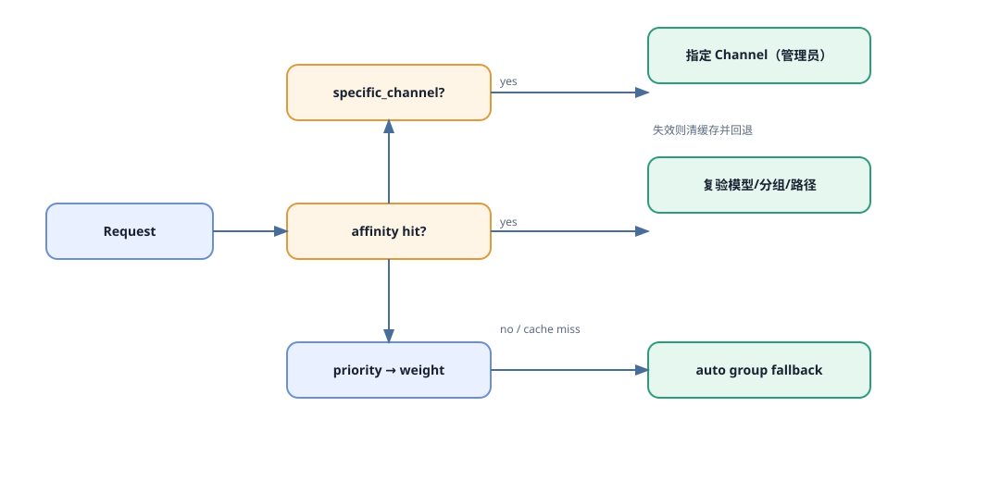
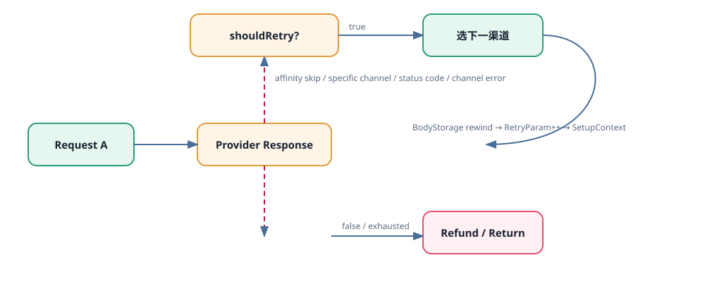

Guide 04
渠道亲和性与故障切换
同一业务 Key 为什么复用渠道？上游失败时何时换下一个？
亲和决策

规则从 context、Header 或 JSON 路径提取 Key，缓存“规则+模型/分组+Key→channel_id”；命中后仍检查渠道能力。
| 字段 | 影响 |
|---|---|
| key_sources、model/path/User-Agent | 缓存分桶与规则过滤。 |
| TTL、MaxEntries | 复用时长和缓存上限。 |
| skip_retry_on_failure | 亲和渠道失败后是否阻止切换。 |
| switch_on_success、include_using_group | 成功切换是否更新及分组隔离。 |
重试状态机

A 请求 → shouldRetry(error) false：Refund/返回 true：retry++，BodyStorage.Seek(0)，getChannel()，请求 B B 成功：按 B Usage 结算，记录 use_channel=[A,B]
状态码范围、错误码 skip、剩余次数、指定渠道和 affinity 共同决定切换；预扣通常在循环前。
坑与自检
- 504/524 等 always-skip 状态不能靠增加次数解决。
- 流式已发送部分数据后切换可能破坏协议。
- 没有 BodyStorage，第二次重试可能是空 body。
- 异步任务提交成功不等于完成，结算等终态。
- 亲和有 TTL；指定渠道是请求级强约束。